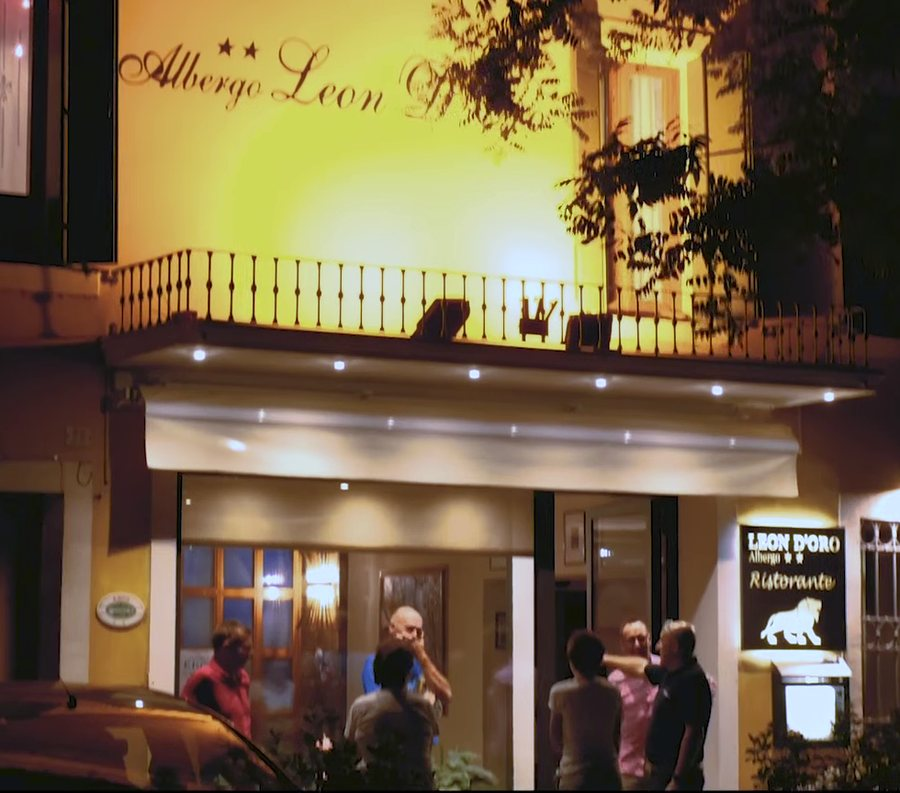
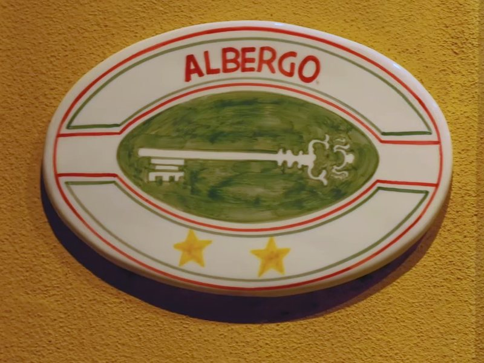
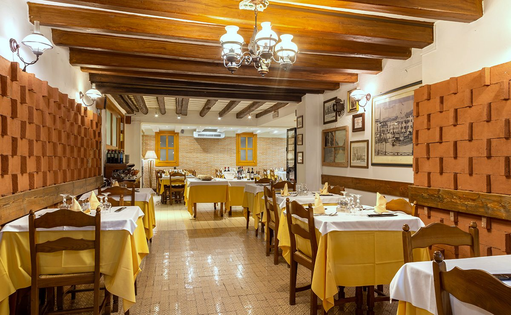
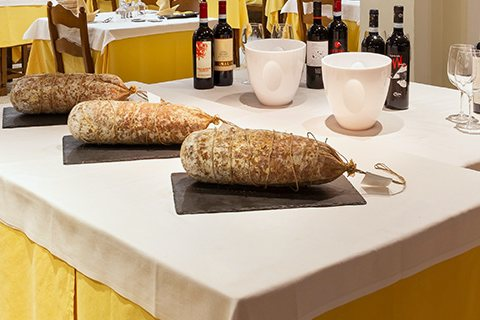
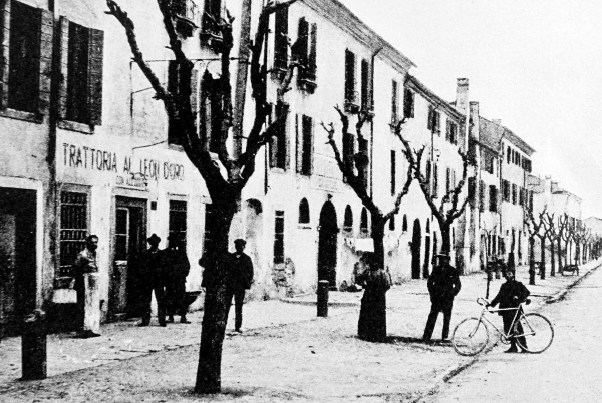
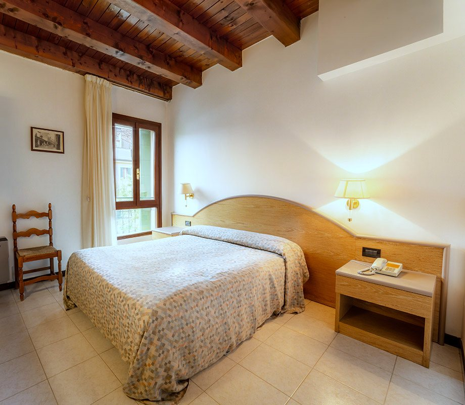

Resta
a cena
La facciata del Leon d’Oro di sera, in Viale Fiume a Este, con la scritta Albergo Leon dipinta sul muro e l’insegna col leone accanto alla porta

La facciata del Leon d’Oro di sera, in Viale Fiume a Este, con la scritta Albergo Leon dipinta sul muro e l’insegna col leone accanto alla porta

Albergo e trattoria a Este, in Viale Fiume 20: la cena, la camera e il garage per la bici, a due passi dal Castello Carrarese.


Musso con polenta, baccalà alla vicentina, bigoli alla boscaiola, fegato alla veneziana e i vini dei Colli Euganei: la cucina della tradizione, senza rivisitazioni.
Il menù cambia ogni giorno. Il venerdì sera c’è il pesce, ed è meglio prenotare; la domenica il ristorante è chiuso.

Dai primi del Novecento era la Trattoria al Leon d’Oro con alloggio, vicino alla Porta Vecchia: un posto di ristoro per i viaggiatori e per i loro cavalli. Dagli anni Cinquanta è della famiglia Rubini.
Cartolina d’epoca, Este, Viale di Via Restara: a sinistra l’insegna Trattoria al Leon d’Oro con alloggio, davanti alcuni uomini e un ragazzo con la bicicletta
Due ciclisti con la maglia gialla e nera su una strada bianca, fra i Colli Euganei
Le bici passano la notte nel garage dell’albergo. Da Este passa l’anello ciclabile dei Colli, 70 km; chi vuole compagnia esce con il Team Este Bike, ritrovo in piazza alle 8.30 d’estate e alle 9 d’inverno.
Con la colazione, la singola costa 50 € e la doppia 75 €; la mezza pensione 65 € a persona, bevande incluse. È il listino del 2026.
Chi assiste un ricoverato all’ospedale di Schiavonia trova qui una camera, e le indicazioni per arrivarci in navetta o in taxi.

Albergo Ristorante Leon d’Oro S.n.c. di Rubini Rodolfo & C.
Viale Fiume 20, 35042 Este (PD)
Ristorante chiuso la domenica
Telefono 0429 602949
Fax 0429 3072
prenotazioni@leondoroeste.it
P.IVA e C.F. 04185510288
REA PD-369167
CIN IT028037A1GWJ7NDDS